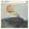

Progressive image rendering
Render Conf 2017
José M. Pérez · Web dev at Spotify
Images on the web
To use or not to use images
Optimise your images
really
Picture element and srcset
Illustration from WHATWG HTML spec
Combine regular images and lazy-loaded ones
IntersectionObserver
What to show while the image is loading
Alternatives
Examples of solid color
Examples of Progressive Image Loading
Medium
How it's done
- Use <div> to render the image
- Request small thumbnail
- Draw thumbnail to <canvas/> and apply blur effect
- Request large image
- Render large image and hide <canvas/>
How do users perceive it?
Did @Medium recently add a new image loading fade-in? I noticed it this morning on mobile and just now again on web. Looks nice.
— Jason (@lang) February 29, 2016
@Medium's articles (although full of high-res images) load up very fast *-*
— DobaKung (@zartre) March 28, 2015
or maybe not?
I don't know about you but I don't like a bit those blurry (still loading...) images on Medium. Very distracting.
— Harris Rodis (@harrisrodis) December 29, 2015
That blurry image preloading thing on Medium - is it just me or does it make all images load extremely slowly now?
— James Young (@welcomebrand) February 5, 2016
With the Progressive JPEG method [...] cognitive fluency is inhibited and the brain has to work slightly harder to make sense of what is being displayed.
— From Progressive image rendering: Good or evil?
Reliable?
I'm seeing this more and more on Medium posts. Maybe the whole "blur the pictures" stuff isn't a good idea… pic.twitter.com/X8wLBDHHFw
— Damien Erambert (@Eramdam) January 8, 2016
This @Medium page is fully loaded on my slow connection. Very pretty with those stupid image effects, isn’t it? pic.twitter.com/kLwlyWRLhc
— Sara Soueidan (@SaraSoueidan) November 28, 2015
Facebook - Inlining thumbnail image in payload
Facebook - Inlining thumbnail image in payload
Unfortunately, the standard JPEG header is hundreds of bytes in size. In fact, the JPEG header alone is several times bigger than our entire 200-byte budget. However, excluding the JPEG header, the encoded data payload itself was approaching our 200 bytes.
Facebook - Inlining thumbnail image in payload
| Header (mainly Quantization Table and Huffman Table) | Compressed Data |
| Client (mobile app) | GraphQL |
Generating tiny thumbnails
JPG
- 464 B
- 532 B

- 428 B

- 409 B

- 456 B

- 692 B

WebP
- 112 B
- 154 B
- 106 B
- 96 B
- 116 B
- 202 B
Generating tiny thumbnails
JPG
- 464 B
- 532 B
- 428 B
- 409 B
- 456 B
- 692 B
WebP
- 112 B
- 154 B
- 106 B
- 96 B
- 116 B
- 202 B
Getting creative with SVGs
Source: polygon.com/a/ps4-review
How it works
Drawing bitmap images
Canny Edge Detector
- We can tweak how many lines we want to generate. Eg prune short ones. Can be improved a lot.
Should we do this?
Just because you can it doesn't mean you should